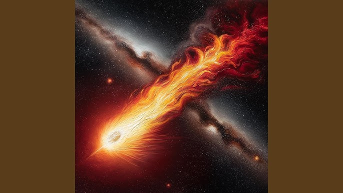
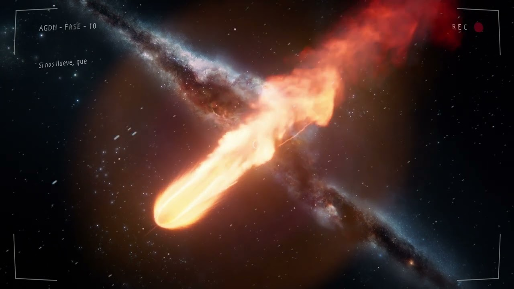

🔥 ARMAGEDÓN 🔥

Acerca del Álbum
ARMAGEDÓN es uno de los proyectos musicales más ambiciosos de Humbe. En este álbum, el artista explora emociones intensas, cambios personales y momentos decisivos que transforman la vida de las personas.
La producción combina elementos de pop, sonidos electrónicos y arreglos modernos que crean una atmósfera poderosa y emotiva. Las canciones abordan temas como el amor, la pérdida, la superación y la búsqueda de nuevos comienzos.
🎵 Canción Destacada
Entre los temas más populares de esta etapa se encuentra "Kintsugi", una canción que logró gran reconocimiento por su intensidad emocional y la conexión que generó con el público.
⚡ Significado del Álbum
El nombre ARMAGEDÓN simboliza momentos de cambio radical y transformación. Humbe utiliza esta idea para representar el final de una etapa y el inicio de otra, mostrando cómo las experiencias difíciles pueden convertirse en oportunidades para crecer.
🌟 Impacto
El álbum fue muy bien recibido por los seguidores del artista debido a su madurez musical, la calidad de su producción y la profundidad de sus letras. Muchos consideran este proyecto una de las etapas más importantes de su carrera.
🎤 Legado
ARMAGEDÓN destaca por transmitir emociones fuertes y mensajes de resiliencia. Las canciones continúan siendo escuchadas por miles de personas que encuentran en ellas inspiración para afrontar sus propios desafíos.
🎵 Canciones Destacadas

Kintsugi |
 1960 |